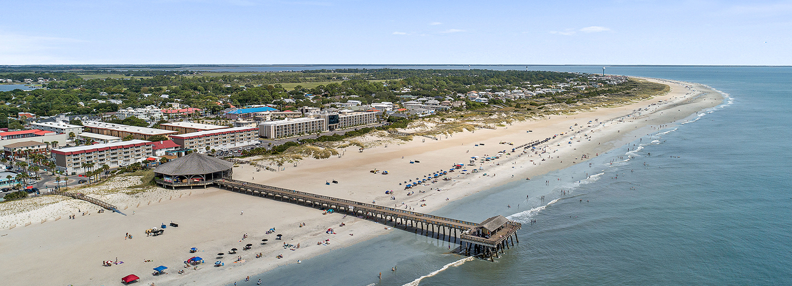
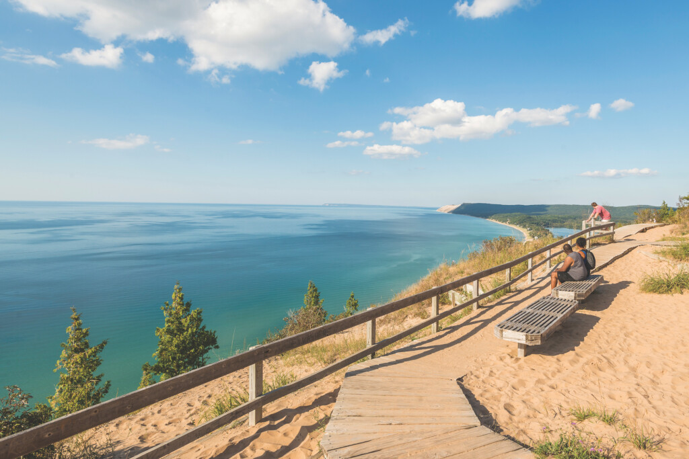
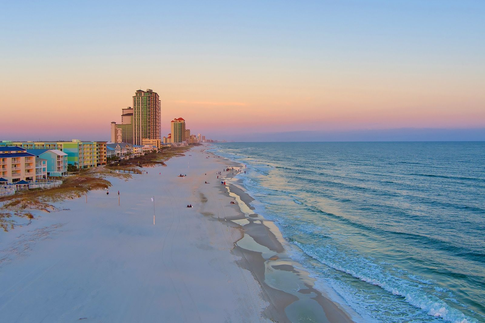

Tybee Island is a peaceful waterfront location just outside Savannah, offering quiet beaches, relaxing views, and a slower pace compared to more crowded tourist spots.
View Destination
Traverse City offers beautiful freshwater beaches with clear blue water and scenic surroundings. It’s a hidden gem perfect for relaxing and enjoying nature without large crowds.
View Destination
Gulf Shores is an underrated waterfront destination with soft white sand, warm waters, and a calm environment, making it ideal for families and travelers looking for a quieter beach experience.
View Destination